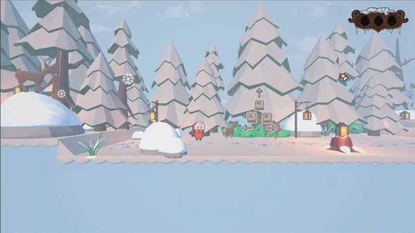
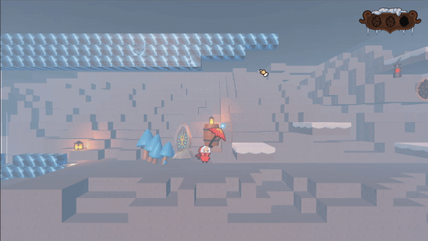

Tuuli And The Windy Mountain
Godot, GDScript


Tuuli and the Windy Mountain is a charming 2.5D platformer about young Tuuli climbing a mystical mountain. This was a foundational project during which I learned the basics of programming and became familiar with the Godot engine. I implemented core platforming mechanics, including “coyote time,” to create more forgiving and enjoyable player controls. The experience taught me the value of starting with simple concepts before expanding, and how thoughtful constraints can often lead to better game design.
About the Game


Tuuli and the Windy Mountain is a charming 2.5D platformer that follows Tuuli, a young girl, on her journey up a mystical mountain. Players navigate beautifully crafted environments, using wind-powered abilities to overcome obstacles and traverse challenging terrain. The game features smooth platforming mechanics, with two unique enemy types adding variety to the challenges. The 3D world beautifully highlights the detailed 2D character, creating a visually striking experience.
Features
- Smooth movement
- Wind mechanics
- Freezing enemys
- Dialog system
- Collectables
- Two simple enemy types
Responsibilities
As the only programmer on Tuuli and the Windy Mountain, I was responsible for implementing core gameplay mechanics and ensuring the game’s functionality. This included learning the Godot engine and programming with GDScript, as well as assisting with engine-related tasks and version control to maintain smooth team collaboration. I worked closely with the game design team to integrate gameplay elements and created scripts that allowed designers to easily adjust settings in the inspector for greater flexibility. Additionally, I contributed to set dressing, helping to bring the world to life through thoughtful environmental design.
What I learned
Tuuli and the Windy Mountain was my first major project. Throughout its development, I gained a solid understanding of programming fundamentals and became familiar with the Godot engine. I also learned how to create responsive, “feel-good” movement mechanics to ensure a smooth player experience. One of the most valuable lessons was learning firsthand the challenges of working with spaghetti code. This experience taught me the importance of clean code and good structure. Although I don’t yet write perfect code, I’ve already seen significant improvement in my next work, my second-semester project.
Scripts
The following scripts are excerpts from my project and may not represent the full logic, as they are part of a larger set of interconnected scripts. A word of caution: trying to decipher them may give your brain a good workout. Believe me, even I, the person who wrote them, often find myself wondering what I was thinking. These scripts are meant to showcase my learning curve throughout the semester, not to demonstrate my current skill level. While I acknowledge that they are very poorly written, I wanted to share them as part of my growth and the learning process. You can view the project here.
Player
▶
class_name Player
extends CharacterBody3D
signal player_died
@export var speed : float = 8
@export var jump_strenght : float = 9.5
@export var dash_time = 0.2
@export var dash_speed : float = 20
@export var dash_cooldwon = 0.5
@export var gravity_multiplier : float = 1.5
@export var min_x_rotation_speed : float = 5
@export var x_rotation_speed : float = 10
@export var slow_speed : float = 5
@export var min_slow_speed :float = 1
@export var wind_x_speed : float = 2
@export var wind_multi : float = 1.2
@export var floating_speed : float = 5
@export var min_floatin_speed : float = 5
@export var wind_dampening : float = 4
@export var out_of_wind_time : float = 0.2
@export var cojote_time : float = 0.5
@export var original_jump_buffer_time : float = 0.5
@export var frezze_timer_wait_timer : float = 0.1
@export var sprite_offset_x :float = 0.12
@export var dash_vfx_timer : float = 0.01
@export var knockback_duration: float = 3
@export var dash_vfx : PackedScene
@export var bullet : PackedScene
@export var dash_cooldown_color : Color
var gravity : float = ProjectSettings.get_setting("physics/3d/default_gravity")
var direction : int
var last_direction : int
var knockback : float
var cam_ray_dir : Vector2 = Vector2.ZERO
var death_started = false
var plattfrom_speed : float= 0
var enemy
var direction_can_change = true
var talking = false
var wind : Vector2 = Vector2.ZERO
var max_wind_speed = Vector2.ZERO
var shoot_direction : Vector2 = Vector2.ZERO
var umbrella_rotation : float
var dash_direction
var wind_umbrella_speed
var is_umbrella_open : bool = false
var is_dashing : bool = false
var can_damage : bool = false
var can_jump : bool = true
var is_aiming : bool = false
var is_dead : bool = false
var is_freezed : bool = false
var is_gravity : bool = true
var dash_input : bool = false
var shoot_input: bool = false
var shoot_cooldown_over = true
var unfreeze_timer_started : bool = false
var can_open_umbrella = true
var can_dash = true
var can_dash1 = true
var can_shoot = true
var can_move = true
var animation_playing = false
var is_falling = false
var x_wind_rotation : float
var y_wind_rotation : float
var is_last_input_gamepad
var anim_can_change = true
var anim_can_change2 = true
var play_open_sound : bool = true
var first_time_on_floor = true
var can_die : bool = true
var play_open_anim = true
var play_close_anim = false
var left :bool = false
var mid :bool= false
var right :bool= false
@onready var left_marker_position = $LeftMarker.position
@onready var right_marker_position = $RightMarker.position
@onready var respawn_position = global_position
@onready var walk_sound : AudioStreamPlayer = $WalkSound
@onready var dash_sound : AudioStreamPlayer = $DashSound
@onready var jump_buffer_time = 0
@onready var original_speed : float = speed
@onready var dash_timer : Timer = $DashTimer
@onready var original_out_of_wind_time : float = out_of_wind_time
@onready var original_cojote_time : float = cojote_time
@onready var original_floating_speed : float = floating_speed
@onready var original_gravity : float = gravity
@onready var original_wind_x_speed : float = wind_x_speed
@onready var anim_player = $AnimationPlayer
@onready var sprite_x_position = $AnimatedSprite3D.position.x
@onready var original_dash_vfx_timer = dash_vfx_timer
@onready var cam_ray_cast_right : RayCast3D = $CameraRayCastRight
@onready var cam_ray_cast_up : RayCast3D = $CameraRaycastUp
func _ready():
$FakePlayer/ColorRect.visible = false
$FakePlayer.visible =false
$AnimatedSprite3D.visible = true
$JumpVFX.visible = true
$LandVFX.visible = true
$WalkVFX.visible = true
$WalkVFX.frame = 0
$JumpVFX.frame = 0
$LandVFX.frame = 0
$DeathShape.disabled = true
set_animation("death_fall")
anim_can_change2 = false
position.z = 0
last_direction = 1
dash_timer.wait_time = dash_time
$DashCooldown.wait_time = dash_cooldwon
$FrezzeTimer.wait_time = frezze_timer_wait_timer
can_move = false
can_open_umbrella = false
$Umbrella.visible = false
func _physics_process(delta):
$CollectableScreen/Left.visible = left
$CollectableScreen/Mid.visible = mid
$CollectableScreen/Right.visible = right
if first_time_on_floor && is_on_floor():
first_time_on_floor = false
anim_can_change2 = true
set_animation("realive")
anim_can_change2 = false
if not is_on_floor():
not_on_floor(delta)
left_marker_position = $LeftMarker.global_position
right_marker_position = $RightMarker.global_position
if velocity == Vector3(0,0,0)|| (!direction && !velocity.y):
set_animation("idle")
if enemy:
if enemy.can_damage:
set_animation("death")
anim_can_change = false
$DeathShape.disabled = false
$PhysicShape.disabled = true
if can_dash:
$Umbrella/UmbrellaAnim.modulate = Color(1,1,1)
else:
$Umbrella/UmbrellaAnim.modulate = dash_cooldown_color
if !is_freezed:
try_jump(delta)
if can_move:
movement(delta)
else:
direction = 0
if !is_dashing:
velocity.x = 0
move_and_slide()
play_sound_and_VFX()
if dash_input:
dash()
if shoot_input:
shoot()
else:
if unfreeze_timer_started == false:
$FrezzeTimer.start()
unfreeze_timer_started = true
rotate_umbrella(delta)
check_umbrella(delta)
if is_dashing:
dashing(delta)
if Input.is_action_just_released("shoot") && is_umbrella_open && can_shoot &&shoot_cooldown_over:
shoot()
if direction:
if is_on_floor():
set_animation("run")
cam_ray_dir = Vector2(1,1)
if last_direction<0:
cam_ray_dir.x = -1
if last_direction>0:
cam_ray_dir.x = 1
if velocity.y < 0:
cam_ray_dir.y = -1
if velocity.y > 0:
cam_ray_dir.y = 1
if velocity.y < 0.1 && velocity.y > -0.1:
cam_ray_dir.y = -1
cam_ray_cast_right.target_position.x = abs(cam_ray_cast_right.target_position.x) * cam_ray_dir.x
cam_ray_cast_up.target_position.y = abs(cam_ray_cast_up.target_position.y) * cam_ray_dir.y
if cam_ray_cast_right.is_colliding() && cam_ray_cast_up.is_colliding():
$PlayerCamera.set_offset(Vector2(velocity.x, velocity.y), delta , cam_ray_cast_right.get_collision_point().x -global_position.x ,cam_ray_cast_up.get_collision_point().y-global_position.y)
elif cam_ray_cast_right.is_colliding():
$PlayerCamera.set_offset(Vector2(velocity.x, velocity.y), delta ,cam_ray_cast_right.get_collision_point().x-global_position.x , 0)
elif cam_ray_cast_up.is_colliding():
$PlayerCamera.set_offset(Vector2(velocity.x, velocity.y), delta , 0 , cam_ray_cast_up.get_collision_point().y-global_position.y)
else:
$PlayerCamera.set_offset(Vector2(velocity.x, velocity.y), delta ,0, 0)
#$PlayerCamera.set_offset(Vector2(velocity.x, velocity.y), delta)
func _unhandled_input(event):
if event is InputEventKey or event is InputEventMouse:
is_last_input_gamepad = false
else:
is_last_input_gamepad = true
if !is_freezed:
if event.is_action_pressed("jump") && can_dash1 && can_dash && is_umbrella_open && !is_on_floor():
if not is_dashing:
dash_input = true
is_freezed = true
func movement(delta):
if is_falling && is_on_floor():
is_falling = false
set_animation("fall_ended")
$LandVFX.global_position = Vector3(global_position.x, global_position.y -0.726, 0)
$LandVFX.play("land")
pass
if direction_can_change:
direction = Input.get_axis("left", "right")
else:
direction = 1
if direction:
last_direction = direction
if direction < 0:
pass
else:
pass
if !wind:
out_of_wind_time -= delta
if wind || is_on_floor():
out_of_wind_time = original_out_of_wind_time
func try_jump(delta):
jump_buffer_time -= delta
if is_on_floor():
cojote_time = original_cojote_time
can_jump = true
if Input.is_action_just_pressed("jump"):
jump_buffer_time = original_jump_buffer_time
if (Input.is_action_just_pressed("jump") || jump_buffer_time > 0)and can_jump:
velocity.y = jump_strenght
set_animation("jump")
$JumpVFX.global_position = global_position
$JumpVFX.play("jump")
$JumpSound.play_sound()
can_jump = false
func check_umbrella(delta):
if Input.is_action_pressed("umbrella_open") && can_open_umbrella:
is_umbrella_open = true
umbrella_open(delta)
else:
is_umbrella_open = false
play_open_sound = true
umbrella_closed(delta)
func umbrella_closed(delta):
if play_close_anim:
$Umbrella/UmbrellaAnim.play("close")
play_close_anim = false
play_open_anim = true
if last_direction < 0:
$AnimatedSprite3D.flip_h = true
$AnimatedSprite3D.position.x = sprite_offset_x
elif last_direction > 0:
$AnimatedSprite3D.flip_h = false
$AnimatedSprite3D.position.x = sprite_x_position
if can_move && !is_dashing :
velocity.x = wind.x + (speed * direction) + plattfrom_speed + knockback
knockback = lerpf(knockback, 0, delta * knockback_duration)
if wind.x && !is_dashing:
if velocity.x >= max_wind_speed.x:
velocity.x = max_wind_speed.x
func umbrella_open(delta):
play_close_anim = true
if play_open_anim:
$Umbrella/UmbrellaAnim.play("open")
play_open_anim = false
if play_open_sound:
$UmbrellaOpenSound.play()
play_open_sound = false
umbrella_rotation = rad_to_deg(umbrella_rotation)
if abs(umbrella_rotation)>=90:
$AnimatedSprite3D.flip_h = true
$AnimatedSprite3D.position.x = sprite_offset_x
elif abs(umbrella_rotation)<90:
$AnimatedSprite3D.flip_h = false
$AnimatedSprite3D.position.x = sprite_x_position
$Umbrella.visible = true
umbrella_rotation = deg_to_rad(umbrella_rotation)
if can_move && !is_dashing:
velocity.x = (wind.x * wind_multi * x_wind_rotation) + (speed * direction ) + (plattfrom_speed) +knockback + wind_x_speed
knockback = lerpf(knockback, 0, delta * knockback_duration)
if wind.x && !is_dashing:
if velocity.x >= max_wind_speed.x && max_wind_speed.x >0:
velocity.x = max_wind_speed.x
if velocity.x < max_wind_speed.x && max_wind_speed.x < 0:
velocity.x = max_wind_speed.x
if wind.y:
if $GlideSound.playing == false:
$GlideSound.play()
if velocity.y >= max_wind_speed.y && max_wind_speed.y >0:
velocity.y = max_wind_speed.y
if velocity.y < max_wind_speed.y && max_wind_speed.y < 0:
velocity.y = max_wind_speed.y
set_animation("fly")
velocity.y += wind.y* y_wind_rotation * delta
if velocity.y < 0 && wind.y >0&& umbrella_rotation <0:
velocity.y += delta * wind_dampening
if velocity.y >0 && wind.y <0 && umbrella_rotation >0:
velocity.y -= delta * wind_dampening
func not_on_floor(delta):
if is_gravity:
cojote_time -= delta
if cojote_time > 0 && can_jump:
can_jump = true
else:
can_jump = false
if is_umbrella_open && out_of_wind_time < 0:
if umbrella_rotation < 0 && velocity.y <0:
velocity.y = -floating_speed
set_animation("fall_idle")
else:
if out_of_wind_time <0:
velocity.y -= gravity * delta
set_animation("fall_idle")
else:
if velocity.y < 0:
set_animation("fall_idle")
is_falling = true
velocity.y -= gravity * delta * gravity_multiplier
else:
velocity.y -= gravity * delta
func shoot():
$Umbrella/AnimatedSprite3D.play("shoot")
$ShootSound.play()
$PlayerCamera.apply_strenght()
shoot_cooldown_over = false
$ShootCooldown.start()
$BulletSpawn.DIRECTION = umbrella_rotation
var b = bullet.instantiate()
b.position = $Umbrella/UmbrellaAnim/BSpawn.global_position
b.position.z = global_position.z
$BulletSpawn.add_child(b)
b.global_position = $Umbrella/UmbrellaAnim/BSpawn.global_position
shoot_input = false
$Umbrella/UmbrellaAnim/BSpawn/RayCast3D.enabled = true
$Umbrella/UmbrellaAnim/BSpawn/Timer.start()
func dash():
$PlayerCamera.apply_strenght()
dash_sound.play()
dash_timer.start()
is_dashing = true
is_gravity = false
can_move = false
dash_direction = Vector2.from_angle(umbrella_rotation)
dash_direction = dash_direction.normalized()
dash_input = false
set_collision_layer_value(1,true)
set_collision_mask_value(1, true)
set_collision_mask_value(2, false)
set_collision_mask_value(3, true)
$HitBox.set_collision_mask_value(1, false)
$HitBox.set_collision_layer_value(1, false)
func dashing(delta):
is_dashing = true
gravity = 0
velocity.x = dash_direction.x *dash_speed
velocity.y = dash_direction.y * -dash_speed
dash_vfx_timer += delta
if dash_vfx_timer > original_dash_vfx_timer:
dash_vfx_timer = 0
var image = dash_vfx.instantiate()
image.position = Vector3(0,0,-0.1)
$Particle.add_child(image)
if direction < 0:
image.flip_sprites()
image.global_position = $ParticleSpawnPosition.global_position
move_and_slide()
func rotate_umbrella(delta):
umbrella_rotation = Vector2(global_position.x, global_position.y).angle_to_point(Vector2(global_position.x + get_window().get_mouse_position().x- 1920/2 +$PlayerCamera.position.x * 50, global_position.y + get_window().get_mouse_position().y- 1080/2 -$PlayerCamera.position.y * 50))
$Umbrella.rotation.z =-umbrella_rotation
umbrella_rotation = rad_to_deg(umbrella_rotation)
if wind.y:
if wind.y <0:
if umbrella_rotation<=90:
y_wind_rotation = (umbrella_rotation/90+1)
if umbrella_rotation >90:
y_wind_rotation = 1-(umbrella_rotation-90)/90+1
if wind.y > 0:
if umbrella_rotation<=0:
if abs(umbrella_rotation)<=90:
y_wind_rotation = abs(umbrella_rotation/90)+1
if abs(umbrella_rotation)>90:
y_wind_rotation = (1-abs(abs(umbrella_rotation)-90)/90)+1
if umbrella_rotation >0:
if umbrella_rotation <= 90:
y_wind_rotation = 1-abs(umbrella_rotation/90)
if umbrella_rotation > 90:
y_wind_rotation = abs(abs(umbrella_rotation)-90)/90
y_wind_rotation = abs(y_wind_rotation)
if umbrella_rotation > 0 && is_umbrella_open && wind.y == 0:
if umbrella_rotation<=90:
gravity = abs(original_gravity *(umbrella_rotation/90+1))
if umbrella_rotation >90:
gravity = abs(original_gravity * (1-(umbrella_rotation-90)/90+1))
else:
gravity = original_gravity
if umbrella_rotation < 0 && umbrella_rotation> -180:
floating_speed = min_floatin_speed+original_floating_speed-abs(original_floating_speed * ((abs(umbrella_rotation + 90)/90) -1))
if umbrella_rotation < 0 && wind.y > 0:
if abs(umbrella_rotation) <= 45:
wind_x_speed = original_wind_x_speed * abs(umbrella_rotation)/45
if abs(umbrella_rotation) > 45:
wind_x_speed = original_wind_x_speed * (1-(abs(umbrella_rotation)-45)/45)
if abs(umbrella_rotation) >= 90:
wind_x_speed = -original_wind_x_speed * ((abs(umbrella_rotation)-90)/45)
if abs(umbrella_rotation) >= 135:
wind_x_speed = -original_wind_x_speed * (1-(abs(umbrella_rotation)-135)/45)
else:
wind_x_speed = 0
if last_direction>0:
if abs(umbrella_rotation)<=45 && umbrella_rotation <=0:
speed = x_rotation_speed * abs(umbrella_rotation/45) +min_x_rotation_speed
if abs(umbrella_rotation)>45 && umbrella_rotation <=0:
speed = x_rotation_speed * (1-((abs(umbrella_rotation)-45)/45)) + min_x_rotation_speed
if abs(umbrella_rotation)>90:
speed = slow_speed * (1-(abs(umbrella_rotation)-90)/90) + min_slow_speed
if last_direction<0:
if abs(umbrella_rotation)<90:
speed = slow_speed * ((abs(umbrella_rotation)/90)) + min_slow_speed
if umbrella_rotation<-90:
speed = x_rotation_speed * ((abs(umbrella_rotation)-90)/45) + min_x_rotation_speed
if umbrella_rotation<=-135:
speed = x_rotation_speed * (1-(abs(umbrella_rotation)-135)/45) + min_x_rotation_speed
if wind && is_umbrella_open:
if wind.x > 0:
if abs(umbrella_rotation)<=90:
x_wind_rotation = 1-abs(umbrella_rotation)/90
x_wind_rotation = x_wind_rotation +1
if abs(umbrella_rotation)>90:
x_wind_rotation = 1-abs(abs(umbrella_rotation)-90)/90
if wind.x < 0:
if abs(umbrella_rotation)<=90:
x_wind_rotation = abs(umbrella_rotation)/90
if abs(umbrella_rotation)>90:
x_wind_rotation = abs(abs(umbrella_rotation)-90)/90
x_wind_rotation = x_wind_rotation +1
if is_on_floor() || !is_umbrella_open:
speed = original_speed
umbrella_rotation = deg_to_rad(umbrella_rotation)
func dash_ended():
gravity = original_gravity
is_gravity = true
speed = original_speed
is_dashing = false
can_move = true
can_dash = false
velocity.x = lerpf(velocity.x, 0, 0.5)
velocity.y = lerpf(velocity.y, 0, 0.5)
$DashCooldown.start()
set_collision_layer_value(1,true)
set_collision_mask_value(1, true)
set_collision_mask_value(2, true)
$HitBox.set_collision_mask_value(1, true)
$HitBox.set_collision_layer_value(1, true)
func play_sound_and_VFX():
if direction:
if is_on_floor():
if walk_sound.playing == false:
$WalkSound.play()
$WalkVFX.play("WalkVFX")
if direction < 1:
$WalkVFX.position.x = abs($WalkVFX.position.x)
$WalkVFX.flip_h = false
$WalkVFX.visible = true
else:
$WalkVFX.position.x = -abs($WalkVFX.position.x)
$WalkVFX.flip_h = true
$WalkVFX.visible = true
else:
$WalkSound.stop()
$WalkVFX.visible = false
else:
$WalkSound.stop()
$WalkVFX.visible = false
func player():
pass
func on_dead():
if !death_started:
$Death.start()
$DeathSound.play()
death_started = true
if anim_player.current_animation != "death":
set_animation("death")
anim_can_change = false
can_open_umbrella = false
is_freezed = true
can_move = false
is_dead = false
enemy= 0
$HitBox/CollisionShape3D.disabled =true
func death():
$HitBox/CollisionShape3D.disabled =false
enemy= 0
can_open_umbrella = true
anim_can_change = false
is_freezed = true
visible = false
emit_signal("player_died")
$BulletSpawn.delete_children()
$DeathShape.disabled = true
$PhysicShape.disabled = false
anim_can_change = true
can_move = true
is_dead = false
func respawn():
set_animation("idle")
$HitBox/CollisionShape3D.disabled =false
enemy= 0
anim_can_change = true
is_freezed = false
can_open_umbrella = true
anim_can_change = true
is_dead = false
$DeathTimer.start()
is_freezed = false
visible = true
global_position = respawn_position
velocity = Vector3(0,0,0)
visible = true
$BulletSpawn.delete_children()
$DeathShape.disabled = true
$PhysicShape.disabled = false
anim_can_change = true
can_move = true
is_dead = false
func enemy_entered(body):
if body.has_method("enemy"):
enemy = body
if body.can_damage:
on_dead()
if body.has_method("spikes"):
enemy = 0
if body.can_damage:
on_dead()
if body.has_method("flying_enemy"):
enemy = body
if body.can_damage:
on_dead()
func unfreeze():
is_freezed = false
func set_animation(anim_name: String):
if anim_can_change && anim_can_change2:
anim_player.play(anim_name)
func cooldown_ended():
can_dash = true
func _on_frezze_timer_timeout():
unfreeze()
can_move = true
unfreeze_timer_started = false
func _on_shoot_cooldown_timeout():
shoot_cooldown_over = true
func enemy_exited(body):
if body.has_method("enemy") || body.has_method("spikes"):
enemy = 0
func _on_death_timer_timeout():
is_dead = false
func disable():
is_freezed = true
unfreeze_timer_started = true
$PhysicShape.disabled = true
$HitBox/CollisionShape3D.disabled = true
gravity = 0
func enable():
is_freezed = false
anim_can_change = true
anim_can_change2 = true
unfreeze_timer_started = false
$PhysicShape.disabled = false
$HitBox/CollisionShape3D.disabled = false
gravity = original_gravity
can_open_umbrella = true
if !talking:
can_move = true
func enable2():
is_freezed = false
anim_can_change = true
anim_can_change2 = true
unfreeze_timer_started = false
$PhysicShape.disabled = false
$HitBox/CollisionShape3D.disabled = false
gravity = original_gravity
if !talking:
can_move = true
func is_talking():
anim_can_change2 = true
set_animation("idle")
anim_can_change2 = false
direction = 0
can_move = false
can_open_umbrella = false
func _on_death_timeout():
death_started = false
func change_to_idle():
anim_can_change2 = true
set_animation("idle")
enable2()
func umbrella_anim_finished():
if !is_umbrella_open:
$Umbrella.visible = false
func play_end():
can_move = true
$FakePlayer.visible = true
$AnimatedSprite3D.visible = false
$JumpVFX.visible = false
$LandVFX.visible = false
$WalkVFX.visible = false
$FakePlayer/AnimatedSprite3D2.play("run")
$FakePlayer/WalkVFX2.play("WalkVFX")
direction_can_change = false
direction = 1
$FakePlayer/AnimationPlayer.play("fade_in")
$FakePlayer/ColorRect.visible = true
func _on_animation_player_animation_finished(anim_name):
get_parent().restart_game()
Flying enemy
▶
extends PathFollow3D
@export var move_speed :float = 2
@export var up_down_speed : float = 0.5
@export var freeze_duration : float = 2
@export var cooldown : float = 1
@export var enemy_bullet : PackedScene
var a : AnimationPlayer
var player = 0
var can_damage = true
var direction : Vector2 = Vector2.ZERO
var is_dead = false
var is_freezed = false
var can_shoot = true
var freeze_timer_started = false
var cooldown_timer_started = false
var in_range = false
var is_player_colliding = false
@onready var freeze_timer = $Path3D/RangedEnemy/FreezeTimer
@onready var cooldown_timer = $Path3D/RangedEnemy/Cooldown
@onready var original_move_speed = move_speed
@onready var original_up_down_speed = up_down_speed
func _ready():
$Path3D/RangedEnemy/FlyingEnemy/AnimationPlayer.play("idle")
freeze_timer.wait_time = freeze_duration
cooldown_timer.wait_time = cooldown
$Path3D/RangedEnemy/Propeller/AnimationPlayer.play("idle_propeller")
$Path3D/RangedEnemy/FreezeSprite.visible = false
func _physics_process(delta):
if $PropellerSound.playing == false:
$PropellerSound.play()
if !is_dead && !is_freezed:
progress += move_speed * delta
$Path3D/RangedEnemy.progress += up_down_speed * delta
if progress_ratio>0.95 && move_speed >0:
move_speed = -abs(move_speed)
$Path3D/RangedEnemy/RangeLine.target_position.x = -abs($Path3D/RangedEnemy/RangeLine.target_position.x)
$Path3D/RangedEnemy/FlyingEnemy.flip_h = true
$Path3D/RangedEnemy/BulletSpawn.position.x = -abs($Path3D/RangedEnemy/BulletSpawn.position.x)
$Path3D/RangedEnemy/RangeArea.position.x = -abs($Path3D/RangedEnemy/RangeArea.position.x)
if $Path3D/RangedEnemy.progress_ratio>0.95 && up_down_speed >0:
up_down_speed = -abs(up_down_speed)
if progress_ratio < 0.05 && move_speed <0:
move_speed = abs(move_speed)
$Path3D/RangedEnemy/RangeLine.target_position.x = abs($Path3D/RangedEnemy/RangeLine.target_position.x)
$Path3D/RangedEnemy/FlyingEnemy.flip_h = false
$Path3D/RangedEnemy/BulletSpawn.position.x = abs($Path3D/RangedEnemy/BulletSpawn.position.x)
$Path3D/RangedEnemy/RangeArea.position.x = abs($Path3D/RangedEnemy/RangeArea.position.x)
if $Path3D/RangedEnemy.progress_ratio < 0.05 && up_down_speed <0:
up_down_speed = abs(up_down_speed)
if player:
if is_player_colliding && player.is_dashing && is_freezed:
$Path3D/RangedEnemy/FlyingEnemy/AnimationPlayer.play("dead")
$Path3D/RangedEnemy/FreezeSprite/AnimationPlayer.play("unfreeze")
$UnfreezeSound.play()
$DeathSound.play()
$Timer.start()
if in_range && can_shoot && !is_freezed:
$Path3D/RangedEnemy/FlyingEnemy/AnimationPlayer.play("shoot")
$ShootAntisipationSound.play()
move_speed = 0
up_down_speed = 0
if player:
if player.is_dead:
in_range = false
if is_dead && player.is_dead:
respawn()
func flying_enemy():
pass
func shoot():
if can_shoot:
if in_range:
$Path3D/RangedEnemy/Bullets.global_position = Vector3.ZERO
$Path3D/RangedEnemy/Bullets.position = Vector3.ZERO
can_shoot = false
cooldown_timer.start()
direction = Vector2(player.global_position.x, player.global_position.y)- Vector2(global_position.x, global_position.y)
direction = direction.normalized()
var b = enemy_bullet.instantiate()
b.position = Vector3.ZERO
$Path3D/RangedEnemy/Bullets.add_child(b)
b.global_position = $Path3D/RangedEnemy/BulletSpawn.global_position
b.direction = direction
b.rotation.z =direction.angle()
if !is_freezed:
$Path3D/RangedEnemy/FlyingEnemy/AnimationPlayer.play("idle")
move_speed = original_move_speed
up_down_speed = original_up_down_speed
func on_cooldonw_timeout():
can_shoot = true
func freeze():
can_shoot = false
can_damage = false
move_speed = 0
up_down_speed = 0
is_freezed = true
$Path3D/RangedEnemy/FreezeSprite/AnimationPlayer.play("freeze")
$Path3D/RangedEnemy/FlyingEnemy/AnimationPlayer.stop(true)
$FreezeSound.play()
$Path3D/RangedEnemy/FreezeSprite.visible = true
freeze_timer.start()
func on_freeze_timer_timeout():
if !is_dead:
$Path3D/RangedEnemy/FreezeSprite/AnimationPlayer.play("unfreeze")
$UnfreezeSound.play()
func unfreeze():
if !is_dead:
can_damage = true
move_speed = original_move_speed
up_down_speed = original_up_down_speed
is_freezed = false
$Path3D/RangedEnemy/FlyingEnemy/AnimationPlayer.stop(false)
$Path3D/RangedEnemy/FreezeSprite.visible = false
func respawn():
pass
func on_dead():
queue_free()
$Path3D/RangedEnemy/FreezeSprite.visible = false
visible = false
move_speed = 0
up_down_speed = 0
can_shoot = false
is_dead = true
$Path3D/RangedEnemy/StaticBody3D/CollisionShape3D.disabled = true
$Path3D/RangedEnemy/FreezeSprite.visible = false
func player_entered_range(body):
if body.has_method("player"):
player = body
in_range = true
func player_exited_range(body):
if body.has_method("player"):
in_range = false
if !is_freezed:
$Path3D/RangedEnemy/FlyingEnemy/AnimationPlayer.play("idle")
move_speed = original_move_speed
up_down_speed = original_up_down_speed
func player_entered_hitbox(body):
if body.has_method("player"):
player = body
is_player_colliding = true
if can_damage:
player.on_dead()
func player_exited_hitbox(body):
if body.has_method("player"):
is_player_colliding = false
func _on_hit_box_area_entered(area):
if area.has_method("bullet"):
freeze()
func invisible():
$Path3D/RangedEnemy/FreezeSprite.visible = false
func _on_timer_timeout():
queue_free()
func shoot_sound():
$ShootSound.play()
Dialog system
▶
extends CanvasLayer
signal load_next_level
@export var print_time = 0.02
@export var skip_time = 1
var total_text : Array[String] = []
var is_tuuli_talking : Array[bool] = []
var text_a : String
var text_b : String
var text_c : String
var i : int = 0
var can_show_next = false
var timer_started = false
var actual_skip_time : float = 0
@onready var label : Label = $Label
@export var original_print_time = print_time
func _ready():
label.text = ""
visible = false
$Label2.visible = false
$TextureProgressBar.max_value = skip_time
func _physics_process(delta):
if is_tuuli_talking && label.visible_characters > 1:
if !$TuuliSound.is_playing():
$TuuliSound.play()
$FoxSound.stop()
elif !is_tuuli_talking && label.visible_characters > 1:
if !$FoxSound.is_playing():
$FoxSound.play()
$TuuliSound.stop()
if visible :
if Input.is_action_pressed("show_next"):
actual_skip_time += delta
else:
actual_skip_time = 0
if actual_skip_time >= skip_time:
reset()
$TextureProgressBar.value = actual_skip_time
else:
$TuuliSound.stop()
$FoxSound.stop()
print_time -= delta
if i >0:
if is_tuuli_talking && i<=is_tuuli_talking.size():
if is_tuuli_talking[i-1] == true:
$Tuuli.visible = true
$Foxhead.visible = false
else:
$Tuuli.visible = false
$Foxhead.visible = true
else:
if is_tuuli_talking && i= label.get_total_character_count():
can_show_next = true
if !timer_started && label.visible_characters > 2 && can_show_next && total_text:
$Timer.start()
timer_started = true
if can_show_next && Input.is_action_just_pressed("show_next") && total_text:
if total_text.size() == i && is_visible && label.get_total_character_count() > 2:
reset()
else:
add_text(total_text[i])
func _unhandled_input(event):
if event.is_action("show_next") && visible == true && total_text.size() < i:
add_text(total_text[i])
func reset():
total_text = []
is_tuuli_talking = []
visible = false
i = 0
label.text = ""
emit_signal("load_next_level")
func set_text(text : Array[String] , talking_person : Array[bool]):
$AnimationPlayer.play("move_in")
is_tuuli_talking = talking_person
can_show_next = false
total_text = text
add_text(total_text[i])
visible = true
func add_text(text : String):
$Label2.visible = false
can_show_next = false
i += 1
label.text = text
label.visible_characters = 0
func _on_timer_timeout():
timer_started = false
if can_show_next:
$Label2.visible = true
Tools
- Godot
- Mercurial
My Team
- Benjamin Köcher: engineer
- Ilias Christovassilis: designed the levels and game + sounds.
- Lennart Schultz: made 3D animation, tileset and models.
- Martin Kruse: managed everything.
- Susa Steinmetz: made illustrations, UI and VFXs.
- Tim Ritter: made the 3D models and the tileset.
- Vivian Baehnisch: 2D animation, UI and some VFXs.